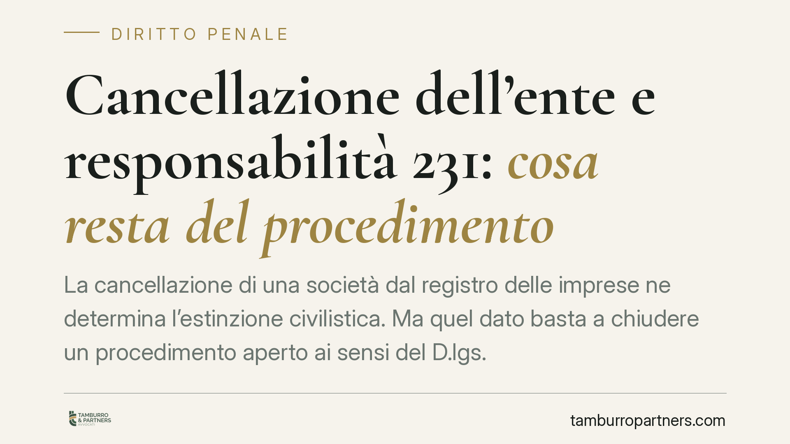
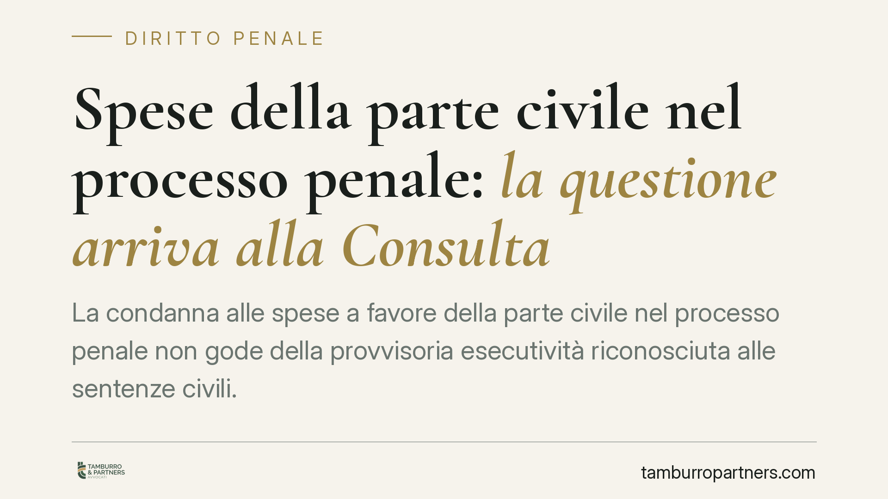

Licenziamento per chiusura del punto vendita: quando è legittimo
La chiusura di un punto vendita non basta, da sola, a rendere legittimo il licenziamento dei dipendenti. La Cassazione richiede la prova di una reale ragione organizzativa, il risp…

Contributi non versati e prescritti: la rendita vitalizia INPS
Quando il datore di lavoro non versa i contributi e il credito si prescrive, il lavoratore rischia di perdere quote di pensione. La legge prevede un rimedio: la rendita vitalizia a…

Rappresentanza sindacale in azienda: come funziona l'art. 19 dello Statuto
La rappresentanza sindacale in azienda si regge sull'art. 19 dello Statuto dei lavoratori, profondamente modificato dal referendum del 1995 e ridisegnato dalla Corte costituzionale…

Mediazione obbligatoria e improcedibilità: gli orientamenti recenti
Cinque pronunce di merito tornano sulla mediazione obbligatoria e sulla negoziazione assistita in materia di condominio e contratti. I giudici chiariscono cosa accade quando si sba…

Licenziamento per giusta causa: la proporzionalità resta al giudice di merito
Con l'ordinanza n. 15670/2026 la Corte di Cassazione torna sul licenziamento per giusta causa e ribadisce un principio consolidato: valutare se la sanzione espulsiva sia proporzion…

Rifiuto di lavorare il sabato e licenziamento: quando il giustificato motivo oggettivo è pretestuoso
Il Tribunale di Firenze ha annullato il licenziamento di un muratore motivato con un giustificato motivo oggettivo rivelatosi pretestuoso. Mancavano le prove documentali della cris…

Cambio lavoro e destinazione del TFR: attenzione al conferimento tacito
Cambiare azienda non è solo un passaggio contrattuale: incide anche sulla destinazione del TFR maturando. Se al momento dell'assunzione il lavoratore non compila il modulo di scelt…

Reintegra o indennità: l'opzione per le 15 mensilità e i riflessi sulla NASpI
Chi vince la causa contro un licenziamento illegittimo, nel regime della tutela reale, può scegliere tra tornare al lavoro e incassare quindici mensilità. Ma questa opzione può inc…

Permessi 104 e più caregiver: quando l'INPS può recuperare le giornate
Più familiari possono oggi assistere la stessa persona con disabilità grazie al superamento del referente unico. Ma il monte giornate non si moltiplica: resta di tre giorni al mese…

Impugnazione della delibera condominiale: come si calcolano i 30 giorni
Il termine per impugnare una delibera condominiale è di trenta giorni, ma il conteggio nasconde più insidie di quanto sembri. Decorrenza differenziata tra presenti e assenti, sospe…

Rendiconto condominiale in ritardo e revoca dell'amministratore
Il rendiconto è l'obbligo centrale dell'amministratore di condominio. La sua presentazione oltre il termine di 180 giorni dalla chiusura dell'esercizio può integrare una grave irre…

Cumulo pensione e lavoro: i limiti per chi torna in attività
Un pensionato può tornare a lavorare, ma le regole cambiano a seconda del canale di uscita. Alcuni trattamenti sono pienamente cumulabili con nuovi redditi, altri prevedono divieti…

Congedo parentale: come funziona la domanda e fino a quando si può chiedere
Il congedo parentale consente ai genitori lavoratori di astenersi dal lavoro nei primi anni di vita del figlio, con un'indennità a carico dell'INPS. La disciplina è dettata dal D.L…

Annettere parte del pianerottolo condominiale: quando è appropriazione
Chiudere una porzione di pianerottolo o di vano scala per ampliare il proprio appartamento è una tentazione frequente. Ma il confine tra uso legittimo del bene comune e appropriazi…

Terrazza a livello: la quota aggettante è a carico del proprietario
La terrazza a livello ha una doppia natura: è bene privato e, insieme, copre le unità sottostanti. La giurisprudenza di legittimità distingue la porzione che funge da copertura, ri…

Alloggio del portiere e separazione: l'ex coniuge deve rilasciarlo?
Alla fine di un matrimonio, chi resta nell'alloggio condominiale assegnato al portiere? Una recente pronuncia di merito ribadisce un principio netto: quell'immobile è un bene di se…

Obblighi di informazione ai sindacati: la fonte è la legge, non solo il CCNL
Un tema torna al centro del contenzioso sindacale: gli obblighi di informazione e consultazione delle rappresentanze dei lavoratori nascono direttamente dalla legge, e non solo dal…
Somministrazione di alcol ai minori: la contravvenzione si consuma solo con la consegna
La punibilità della somministrazione di bevande alcoliche ai minori richiede la materiale consegna del prodotto. Trattandosi di contravvenzione, non è configurabile il tentativo: s…
Malattia psichica e attività sportiva: quando il licenziamento è illegittimo
Un lavoratore in malattia per patologia psichica, sorpreso a giocare a calcetto, non commette necessariamente un illecito disciplinare. Una recente pronuncia di merito valorizza la…
Condotta antisindacale: chi può agire ex art. 28 Statuto dei Lavoratori
Con la sentenza n. 25184/2026 la Cassazione torna sulla legittimazione ad agire per condotta antisindacale ex art. 28 dello Statuto dei Lavoratori. Il principio: per attivare la tu…

Cancellazione dell'ente e responsabilità 231: cosa resta del procedimento
La cancellazione di una società dal registro delle imprese ne determina l'estinzione civilistica. Ma quel dato basta a chiudere un procedimento aperto ai sensi del D.lgs. 231/2001?…
Spese straordinarie non concordate: il genitore può rifiutarsi di pagare?
Con l'ordinanza n. 2953/2026 la Cassazione chiarisce un punto delicato del diritto di famiglia: il genitore non collocatario non può rifiutare il rimborso delle spese straordinarie…

Spese della parte civile nel processo penale: la questione arriva alla Consulta
La condanna alle spese a favore della parte civile nel processo penale non gode della provvisoria esecutività riconosciuta alle sentenze civili. Una recente ordinanza interlocutori…

Assemblea in seconda convocazione: quando vale come prima?
Se l'avviso di convocazione è irregolare o la prima seduta è solo fittizia, la seconda convocazione dell'assemblea condominiale può essere trattata come prima. Il problema non è fo…

Certificato di malattia retroattivo: quando vale dal giorno prima
Secondo un recente orientamento INPS, il certificato di malattia può coprire anche il giorno precedente il rilascio, con eccezioni per sabato, domenica e festività infrasettimanali…

Recuperare i crediti dal condominio moroso: come agisce il fornitore
Chi vanta un credito verso un condominio non può rivolgersi direttamente al singolo condòmino: deve prima ottenere un titolo esecutivo contro l'ente di gestione e solo dopo aggredi…

Assegno divorzile e sacrifici professionali: cosa conta davvero
L'assegno divorzile non serve a mantenere il tenore di vita goduto durante il matrimonio. Serve, tra l'altro, a compensare le rinunce professionali fatte da un coniuge per la famig…

Recesso dell'agente: la motivazione può essere integrata dopo le dimissioni
La Corte di Cassazione torna sul contratto di agenzia e affronta un punto delicato: il principio di immutabilità dei motivi del recesso per giusta causa. Secondo la Corte, l'agente…

Gravi difetti dell'edificio: risponde anche chi vende senza costruire
Un orientamento consolidato della Cassazione è stato di recente ribadito: la responsabilità per gravi difetti dell'edificio ex art. 1669 c.c. può gravare anche sul venditore che no…

Frazionamento immobiliare e allaccio ai contatori: cosa può (e non può) fare il condominio
Chi frazionia un appartamento in due unità autonome deve poter allacciare i nuovi contatori agli impianti comuni. Il condominio non può opporsi con una delibera assembleare: quel v…